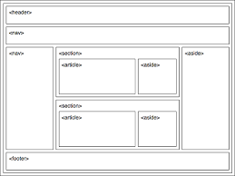

HTML5
HTML 5 (HyperText Markup Language, versión 5) es la quinta revisión importante del lenguaje básico
de la World Wide Web, HTML. HTML5 específica dos variantes de sintaxis para HTML: una «clásica»,
HTML (text/html), conocida como HTML5, y una variante XHTML conocida como sintaxis XHTML 5 que
deberá servirse con sintaxis XML (application/xhtml+xml).12 Esta es la primera vez que HTML y XHTML
se han desarrollado en paralelo. La versión definitiva de la quinta revisión del estándar se publicó
en octubre de 2014.3
Al no ser reconocido en viejas versiones de navegadores por sus nuevas etiquetas, se recomienda al
usuario común actualizar su navegador a la versión más nueva, para poder disfrutar de todo el
potencial que provee HTML 5.
El desarrollo de este lenguaje de marcado es regulado por el Consorcio W3C.
Después de nuestro artículo de introducción a HTML5, vamos a hacer un repaso a algunas de las nuevas
etiquetas que nos trae esta revisión del lenguaje. En particular, en este artículo, nos centraremos
en las que han aparecido para añadir valor semántico y estructural a la web.
Algunas de las más importantes etiquetas introducidas en HTML5 son las que añaden valor semántico y
estructural, es decir, indican de forma inequívoca las distintas partes de las que consta una
página: cabecera, pie, navegación, ETC.

Redirect Notice. (2021). Retrieved 22 June 2021, from
https://www.google.com/url?sa=i&url=https%3A%2F%2Fwww.ediciones-eni.com%2Fopen%2Fmediabook.aspx%3FidR%3D0c18483e900b2f7a16e4bec52a958ae9&psig=AOvVaw0cP2n9OgJMLloE7CtNyl-a&ust=1624417757543000&source=images&cd=vfe&ved=0CAoQjRxqFwoTCLjd_PqhqvECFQAAAAAdAAAAABAK
Las listas no ordenadas van dentro de la etiqueta
ul HTML y de su cierre /ul. Cada punto que queramos añadir a la lista, lo haremos dentro de la
etiqueta li y su cierre.
Las listas ordenadas van enmarcadas dentro de las etiquetas ol /ol. Cada punto de la lista se
escribe con la misma etiqueta que en las no numeradas:
li. Pero al ser listas ordenadas los símbolos serán números y éstos se irán generando
automáticamente por orden, conforme escribamos nuevos puntos.
Si lo que vamos a hacer es un listado de definiciones, podemos usar las etiquetas dl, dt y
dd. Vamos a explicarlas por partes:
Si lo que vamos a hacer es un listado de definiciones, podemos usar las etiquetas dl, dt y
La etiqueta dl viene de los términos ingleses “Definiton list” y nos indica que dentro de
ella, entre ella y su cierre, va a ir una definición.
La etiqueta dt viene de los términos “Definition term” y dentro de ella irá el término que
vamos a definir. Para entendernos mejor, dentro de
dt iría el título de la definición.
La etiqueta dd viene de los términos “Definition description” y nos dice que dentro de ésta
irá la definición.
 HTML, C., CSS, C., Hostings, C., HTML, C., Anticona, H., & cali, h. et al. (2021). Listas en HTML
(Etiquetas ul, ol, li, dl, dt, dd) - Tutorial HTML. Retrieved 22 June 2021, from
https://www.hazunaweb.com/curso-de-html/listas/
HTML, C., CSS, C., Hostings, C., HTML, C., Anticona, H., & cali, h. et al. (2021). Listas en HTML
(Etiquetas ul, ol, li, dl, dt, dd) - Tutorial HTML. Retrieved 22 June 2021, from
https://www.hazunaweb.com/curso-de-html/listas/
Pero, ¿dónde se abre el enlace? Pues por defecto y si no hemos configurado nada en el navegador web
que estemos utilizando el enlace se abre en la misma ventana en la que tengamos el enlace.
Si bien, en el enlace, podemos indicar el destino que queremos darle a dicho enlace. Eso lo podemos
hacer mediante el atributo target. Los posibles valores que admite el atributo target son:
• _blank, el agente de usuario intentará abrir el enlace en una nueva ventana. La nueva ventana no
tendrá nombre.
• _self, el agente de usuario intentará abrir el enlace en el mismo marco donde está en código
actual.
• _parent, el agente de usuario intentará abrir el enlace en el frameset inmediatamente superior al
que se encuentra la página. Esto suele suceder cuando tenemos el enlace en un área de frames.
• _top, el agente de usuario intentará abrir el enlace en la ventana padre. En el caso de que
exista un frameset lo eliminará y se hará con toda la ventana.
• nombre_marco, se podrá indicar el nombre de un frame. En este caso el agente de usuario intentará
abrir el enlace en el frame que coincida con el nombre. En el caso de no existir un frame con ese
nombre lo abrirá en una nueva ventana, asignándole dicho nombre.

Redirect Notice. (2021). Retrieved 22 June 2021, from
https://www.google.com/url?sa=i&url=https%3A%2F%2Fnorfipc.com%2Fcodigos%2Fcomo-usar-enlaces-vinculos-anclajes-html.php&psig=AOvVaw2eqb_ioNc0coCrl5k2I6zH&ust=1624418347717000&source=images&cd=vfe&ved=0CAoQjRxqFwoTCPjXp4qkqvECFQAAAAAdAAAAABAD